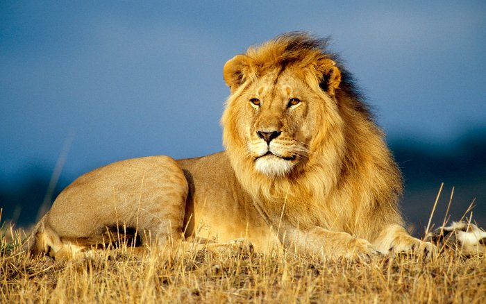

Sư tử (tên khoa học Panthera leo) là một trong những đại miêu trong họ Mèo và là một loài của chi Báo. Được xếp mức sắp nguy cấp trong thang sách Đỏ IUCN từ năm 1996, các quần thể loài này ở châu Phi đã bị sụt giảm khoảng 43% từ những năm đầu thập niên 1990. Trong văn hóa phương Tây, sư tử còn có biệt danh là Chúa tể sơn lâm (King of Beats) hay Vua sư tử (Lion King). Sư tử là lưỡng hình tình dục; con đực lớn hơn con cái với phạm vi trọng lượng điển hình từ 150 đến 250 kg (330 đến 550 lb) đối với con đực và 120 đến 182 kg (265 đến 400 lb) đối với con cái, là loài lớn thứ nhì họ Mèo sau hổ. Đối với sư tử đực thì rất dễ dàng nhận ra được bởi bờm của nó. Sư tử hoang dã hiện sinh sống ở vùng châu Phi hạ Saharan và châu Á (nơi quần thể còn sót lại cư ngụ ở vườn quốc gia Rừng Gir thuộc Ấn Độ), các phân loài sư tử tuyệt chủng từng sống ở Bắc Phi và Đông Nam Á. Cho tới cuối Pleistocene, khoảng 10 000 năm trước, sư tử là động vật có vú có phân bố rộng thứ 2 chỉ sau con người. Khi đó, chúng sống ở hầu khắp châu Phi, ngang qua lục địa Á-Âu từ miền Tây Âu tới Ấn Độ, và châu Mỹ từ Yukon tới Peru.[5] Sư tử là loài sắp nguy cấp, chúng đã được liệt kê là loài dễ bị tổn thương trong sách đỏ IUCN kể từ năm 1996 bởi vì quần thể ở các nước châu Phi đã giảm khoảng 43% kể từ đầu những năm 1990. Nhiều quần thể sư tử không được bảo vệ bên ngoài những khu vực được chỉ định bảo vệ. Mặc dù nguyên nhân của sự suy giảm chưa được làm rõ một cách đầy đủ, nhưng mất môi trường sống và xung đột với con người là những nguyên nhân lớn nhất.
Con sư tử dài nhất (tính từ đầu đến đuôi) từng được ghi nhận là dài 3,6m. Trong khi đó, chú sư tử nặng nhất tên là Simba ở vườn thú Colchester, Anh có trọng lượng gần 375kg. Nhìn chung, một ngày sư tử không hoạt động trong 20 tiếng. Chúng chỉ dành 2 tiếng để đi lại và 50 phút để ăn uống.